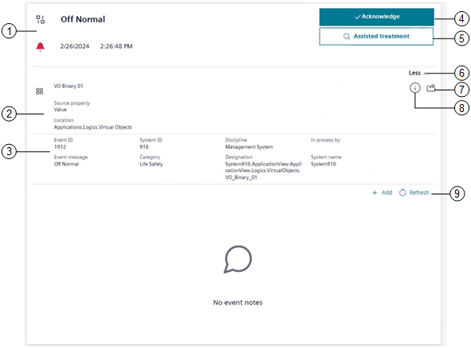

Event Details
In the Events workspace, the event details area allows you to check information and do any actions available for the event currently being selected and processed in Event List.

1 |
| |
State icon | Notes | |
| Event condition is active and not cleared. The event is unprocessed, but not yet acknowledged. The condition which caused the alarm still exists. | |
| Event condition is active and not cleared. The event has been acknowledged. The condition which caused the alarm still exists (wait for condition). | |
| Event condition is quiet (not active), but not cleared. The event is unprocessed, but it has been acknowledged. | |
| The source state is back to normal condition. One of the following:
| |
2 | Where the event occurred in the system, namely, icon and name of the event-source object, source property, and location. | |
3 | Additional information about the selected event, namely, | |
4 | Event handling commands. For instructions, see Send Event Handling Commands. | |
Command | Notes | |
Acknowledge | Available when event state is unprocessed = | |
Reset | Available when event state is ready to be reset = | |
Silence/Unsilence | Available when event state is one of the following:
NOTE: In Fire profiles only, if no other command is available, also Silence/Unsilence is visible but unavailable. | |
Close | Available only for events that can be manually closed, and event state is:
| |
5 | For the event currently selected, one of the following:
| |
6 | Hide or show any additional information about the selected event. For instructions, see Get More Information About the Event Source. | |
7 | Inspect the event source. For instructions, see Get More Information About the Event Source. | |
8 | Check event source information. For instructions, see Get More Information About the Event Source. | |
9 | View and enter event notes. For instructions, see Logging Event Notes. | |